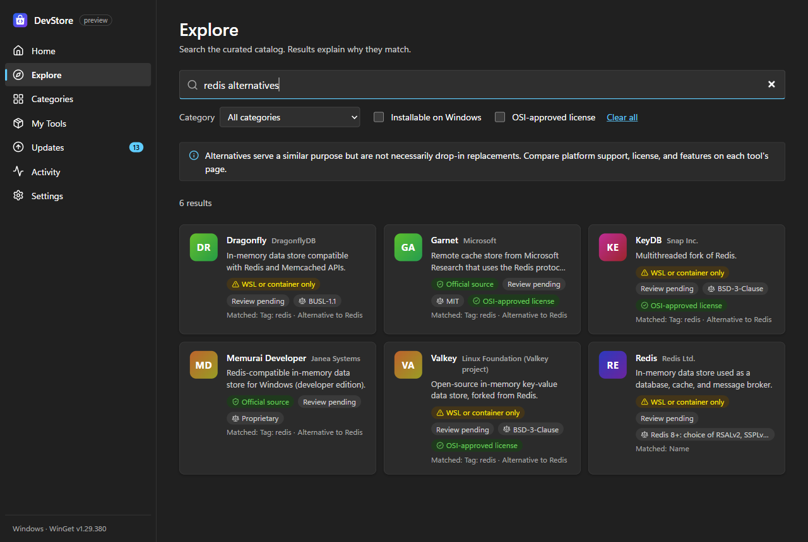

🔎 Search that explains itself
Search by name, tag, or category, or ask for “redis alternatives”. Every result tells you why it matched.
Free · Windows 10 & 11
Find the tool you need, see exactly where it comes from, and install it with one clear action. No more hunting across websites and installers.

Search by name, tag, or category, or ask for “redis alternatives”. Every result tells you why it matched.
See the package, version, installer host, SHA-256 hash, license terms, and whether an admin prompt may appear — then decide.
“Official source” needs recorded evidence and is re-checked against the live download. No fake ratings, no “best” badges.
See what's installed and what's out of date, and update one tool or everything at once, with a result for each.
Starter setups for React, Python, AI/ML, Go, DevOps, Rust, and data science. Pick what you need and install it in one go.
Finds PATH problems — like an old Java hiding your new JDK — and explains them without changing anything.


Click Download for Windows. You get a small installer (about 2 MB).
Open the downloaded file. DevStore installs for your account only — no administrator prompt.
DevStore opens and shows which of your tools are installed and which have updates.
DevStore checks for new versions when it starts. When one is ready, it tells you what's new and installs it after you click Install and restart. Every update is cryptographically signed — DevStore refuses updates that don't match the signature.
From WinGet, Microsoft's package manager built into Windows 10 and 11. DevStore shows the exact package and download location before anything installs, and WinGet checks each installer's hash against its manifest.
No. DevStore installs and runs as your user. Some tools' own installers ask for admin rights through a normal Windows prompt, and the install plan tells you when that may happen. You can always decline.
Only when you choose to update or uninstall them, and the plan warns you when a tool wasn't installed through DevStore.
Nothing. There is no account and no telemetry. DevStore only contacts GitHub to check for its own updates (you can turn that off in Settings) and when you ask for GitHub details.
Windows 10 or 11 on an x64 PC. WinGet (the “App Installer” app) is needed to install tools; it's preinstalled on current Windows versions.
Open Windows Settings → Apps → Installed apps, find DevStore, and choose Uninstall. Tools you installed with DevStore stay installed.